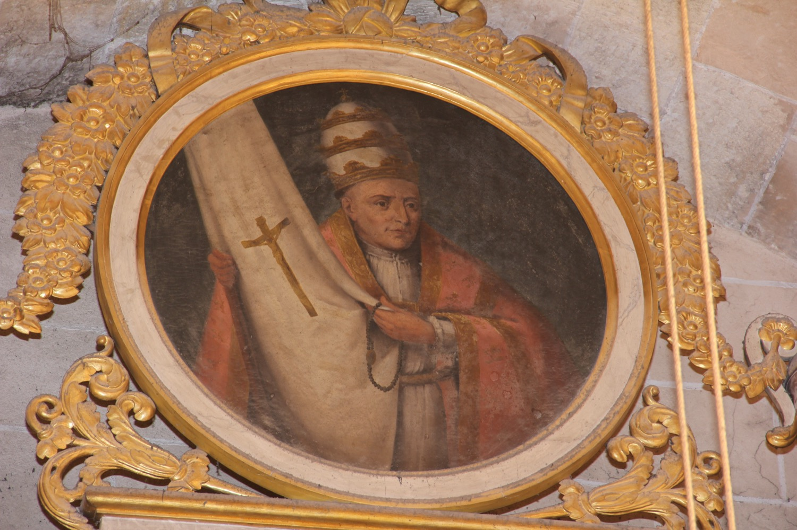

Sant Pius V (1504-1572), nascut Antonio Ghislieri, va ser papa de l’Església catòlica. Ingressà a l’orde dels dominics als catorze anys i, després d’ocupar diversos càrrecs eclesiàstics rellevants, inclòs el de Gran Inquisidor, va ser escollit papa l’any 1566. Com a pontífex, inicià l’aplicació de les directrius del Concili de Trent, inclosa la reforma de la litúrgia, i promogué la Contrareforma contra els protestants.
Als darrers anys de la seva vida impulsà la constitució de la Lliga Santa per lluitar contra els otomans. Les armades de la Lliga Santa i de l’Imperi Otomà s’enfrontaren a la batalla de Lepant el 7 d’octubre de 1571, festivitat de la Mare de Déu del Roser, amb victòria dels cristians. Pius V atribuïa aquesta victòria a la intercessió de la Mare de Déu del Roser, titular d’aquesta capella, a qui havia resat el rosari aquell mateix dia. Això suposà un gran impuls al rés del rosari, devoció que ell mateix havia oficialitzat en una butlla de l’any 1569.
En aquesta pintura, Pius V porta la tiara que l’identifica com a papa. Davall la vestidura papal duu l’hàbit blanc dels dominics: segons la tradició, va ser a partir d’ell que els papes començaren a vestir de blanc. Porta també un rosari a la mà, que ens recorda la seva especial devoció al rosari; el color negre del rosari és el característic dels dominics. La bandera amb el crucifix recorda l’estendard de la Lliga Santa, tot i que originalment aquest era de damasc blau: el color blanc en representacions com aquesta sol simbolitzar la puresa de l’Església i del mateix Pius V.